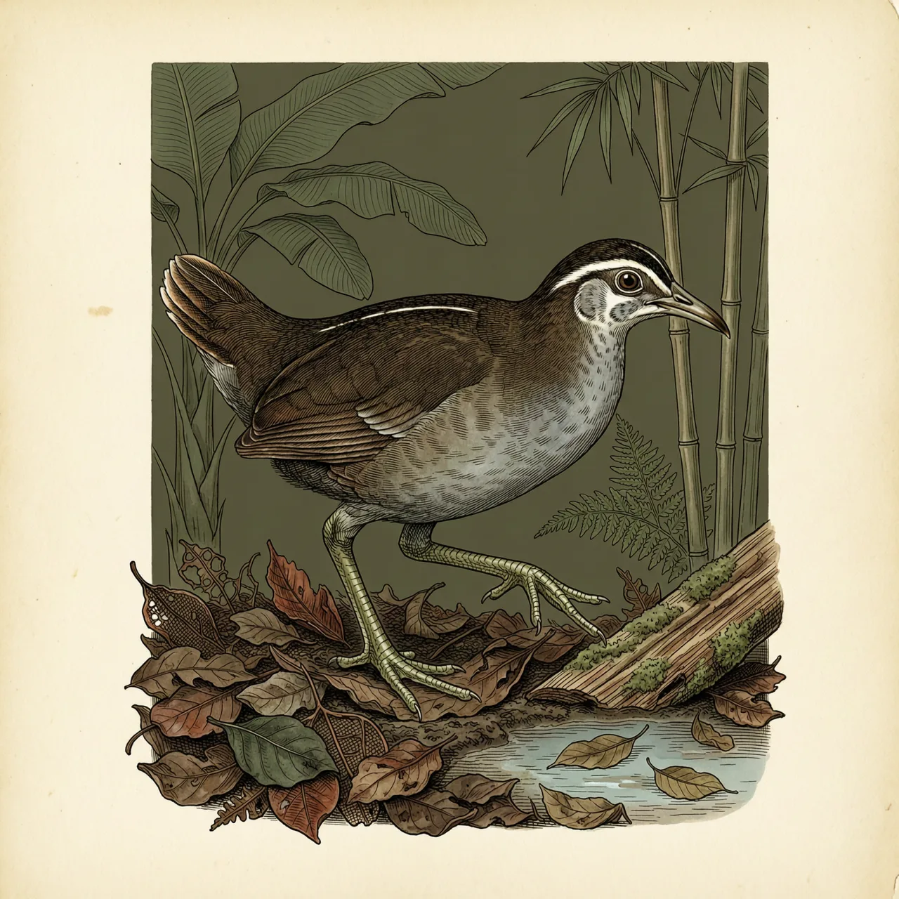
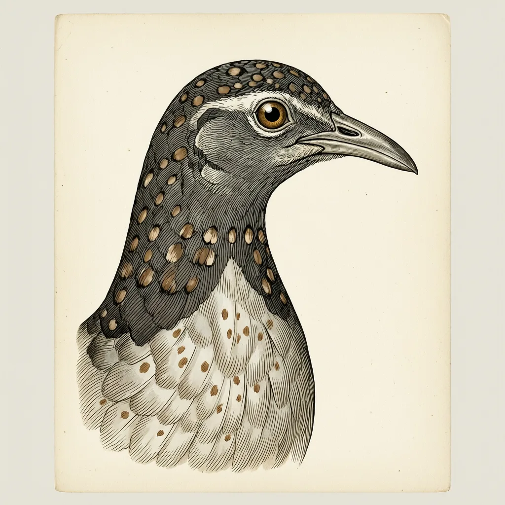

灰喉秧鸡是鹤形目秧鸡科的小型鸟类，体重约277克；留鸟，生活在森林中低层，分布自塞拉利昂东至刚果民主共和国和乌干达西部。体色沉进昏暗的落叶层，难以用眼找到，人们更常靠溪边尖亮的叫声确认它，它在水边觅食甲壳类与水虫。
树冠挡住大半天光，林下昏暗潮润，小水溪从落叶层里渗过去——灰喉秧鸡一生就待在这样森林的中低层。它是留鸟，不做季节迁移，分布从西非塞拉利昂一路向东，到刚果民主共和国东部和乌干达西部。有水，就有它翻找的食物；有密不透光的下层植被，就有它藏身的地方。灰喉秧鸡的体色沉在阴影里几乎和腐叶同色，离开这种环境，它既没食物也没掩护。
灰喉秧鸡觅食的样子很不起眼：压低身体，沿着水边的落叶层和烂泥一点点往前挪，用尖长的喙翻开枯叶，找藏在下面的甲壳类与水虫。它就在你几步外活动，眼睛也很难把它从一堆湿叶子中分辨出来。确定它存在的方式是听——溪边偶尔传出一串尖亮的叫声，短促、响亮，从密林低层里冒出来。关于这种鸟在野外的许多记录，正是先记下叫声、再顺声去找，才确认它就在这片林子里。
IUCN红色名录给灰喉秧鸡的等级是「无危」，容易让人误以为它随处可见。无危只说明种群暂时没有大的威胁，并不说明这种鸟容易被看见。恰恰相反，灰喉秧鸡把日子过成了另一副样子：个体测得很清楚——体重约277克，翼长约16.7厘米，尾长约64毫米，嘴峰长达40.9毫米；可动物本身却模糊，走进它的林子，你大概率只听见几声叫，见不到它挪动一下。数字清清楚楚，身影始终没出现，这种落差就是它的活法。
